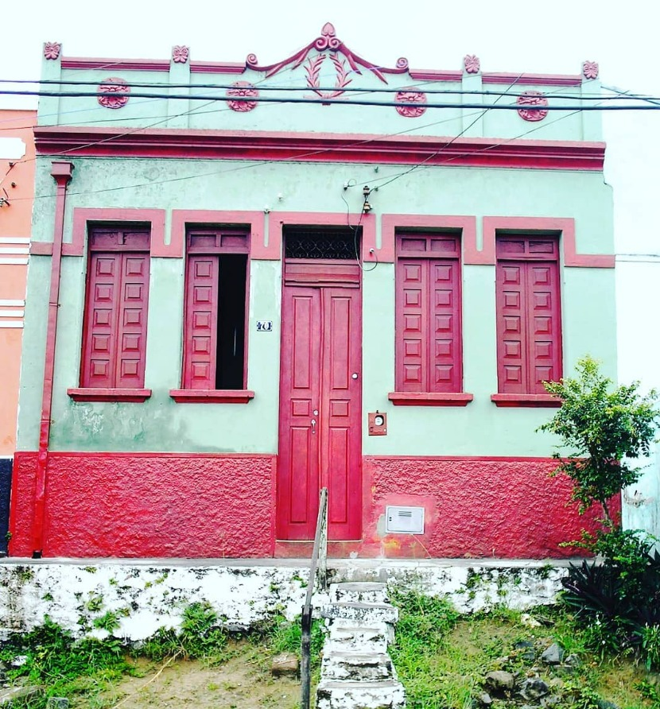
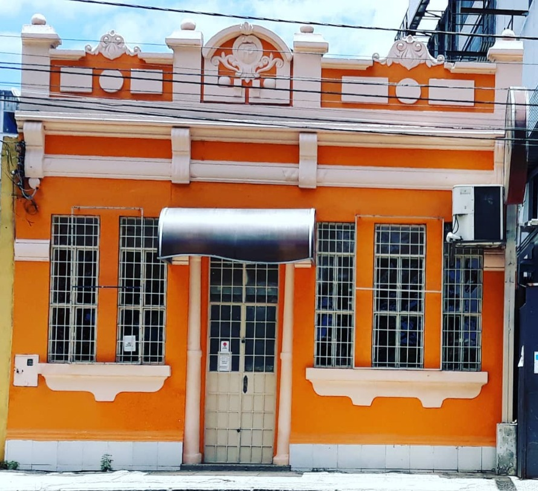
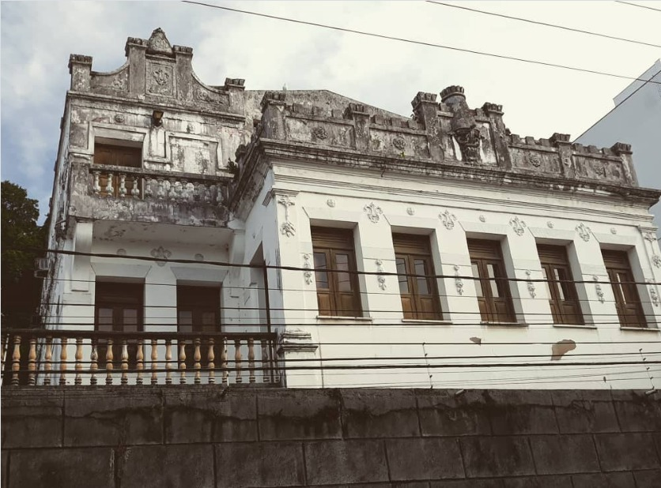
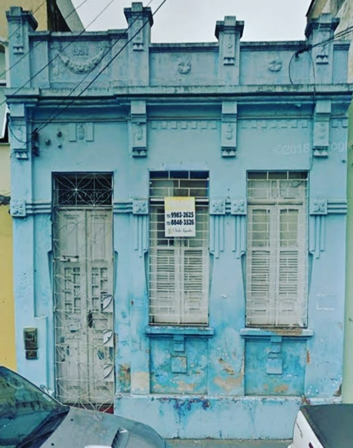
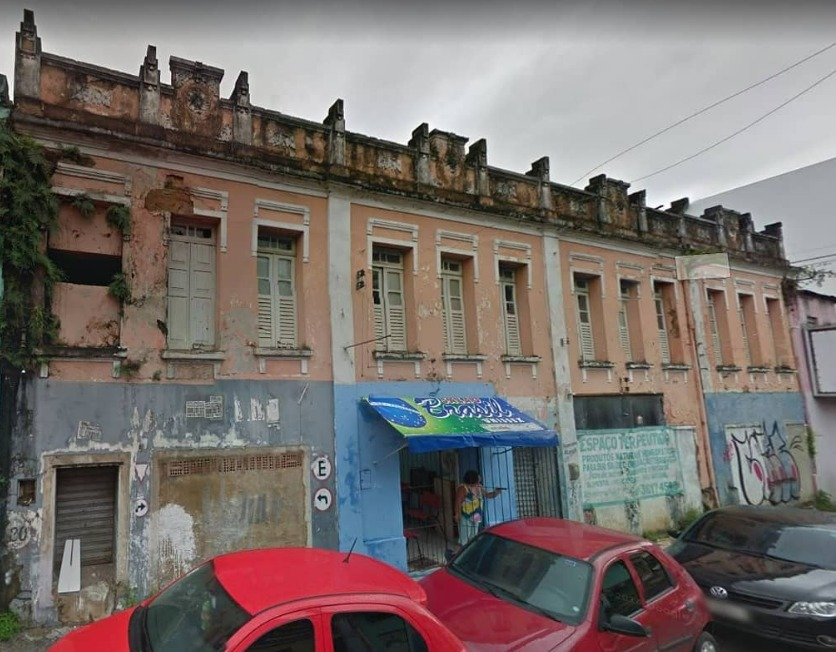
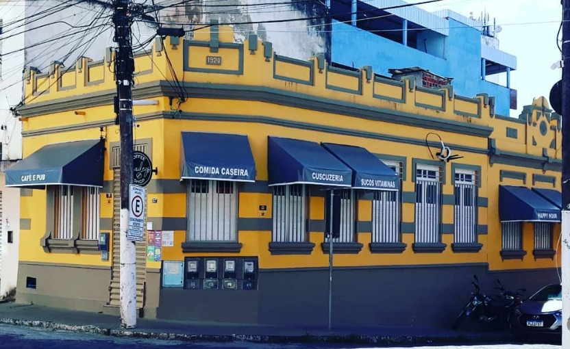
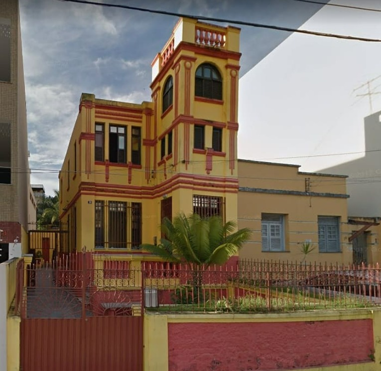
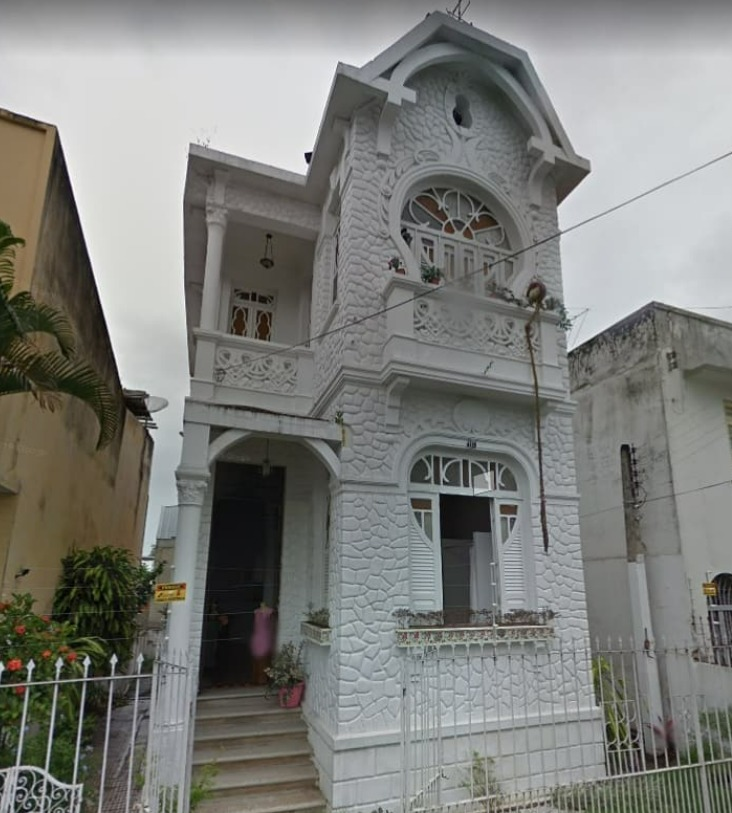

Casas Históricas
Registros visuais que preservam a identidade e a evolução de Itabuna.

construída no inicio do século XX. Porta e janelas altas, de madeira, acompanhadas por uma divisa serpenteada. Mais acima, pequenas colunas, sustentadas por uma barra horizontal, separando ícones florais. Ainda, na área central superior, vê-se uma coroa de louros sustentando dois pergaminhos, estes, unidos por um coração invertido. A fachada da casa indicava a situação econômica do proprietário.

Cinco janelas retangulates altas são guarnecidas por dois peitoris com formato de taças. A blatibanda é composta de quatro micro colunas rematadas de esferas brancas. Ainda, na partes superior, em alto relevo, uma insígnia com as iniciais "FP", ladeada por dois adornos boleados em rococó.

Construído pelo coronel José Henrique Aguiar (primeiro chefe político adamista de Tabocas), que lhe serviu de residência até o inicio do século XX. Na década de 30 foi utilizado como colégio do professor Belfor Saraiva.

Os motivos florais, as borlas, a blatibanda de quatro colunas, a coroa de louros que guarnece a longínqua data de 1924, as histórias acumuladas das pessoas que ali viveram, e toda memória grudada em suas paredes e telhado, estão com os dias contados... A placa de venda encravada na fachada já vaticina o seu fim!!

construído no início do século XX. Por 40 anos, no imóvel, funcionou o Hotel Santa Rita, que, em 1994 fechou suas portas. Em novembro de 2017 "necessitou" ser demolido, em consequência de um desmoronamento ocorrido na loja de confecções que funcionava coadunadamente.

Edificada em 1924 por Pedro Fernandes da Rosa e Alipio Fernandes da Rosa. Anos depois, foi residência do professor Ewerton Alves Challoupp.

Sobrado/Castelinho com traços arquitetônicos neoclássicos no estilo europeu, Construído no início do século XX por Toufic Maron (origem sírio-libanesa), falecido em 1944; embora o imóvel tenha permanecido em posse da família até 1963. O anúncio de venda, colado no frontispício atual, prenuncia, infelizmente, uma futura modificação estética, ou mesmo uma fatídica demolição! A não ser que surja um mecenas, indivíduo difícil de se encontrar nestas terras-do-sem-fim!

Importante representante da “bela urbe” itabunense. É o mais atraente e preservado “castelinho” da cidade. Transeunte que se preza, ao passar pela Miguel Calmon, faz uma rápida parada e reverencia a edificação. Talvez seja o castelinho, que ofusca o brilho dos vizinhos, o motivo pelo qual muitos não consigam ver a Casa Verde do coronel Henrique Alves, com todo seu valor histórico e representativo. Em época de quarentena/covid-19, que nos impede de circular pela cidade, ficará para um outro momento a “genealogia predial” do agora homenageado.